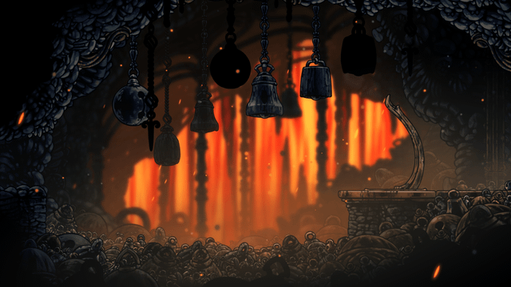

Unlocks your dash. Some flea spots in the Docks need it, so you will be back.
Return with Swift Step and climb up from the first bench you reach after entering from the Marrow.
Needs Swift Step, done
She guards the way into Far Fields.
Open the Bell Beast area one layer below where you first enter, then free the flea there.
Use a Simple Key on the locked door south of the Forge Daughter.
Needs Simple Key
Sample collectible that is ready to collect. Only here to show an open entry.
Sample collectible behind the lower Docks door. Only here to show a locked entry.
Needs the lower Docks door
Layout sample. Entries marked sample only show the states a page can be in; they are not guide data. Hero image: screenshot from Hollow Knight: Silksong, © Team Cherry.